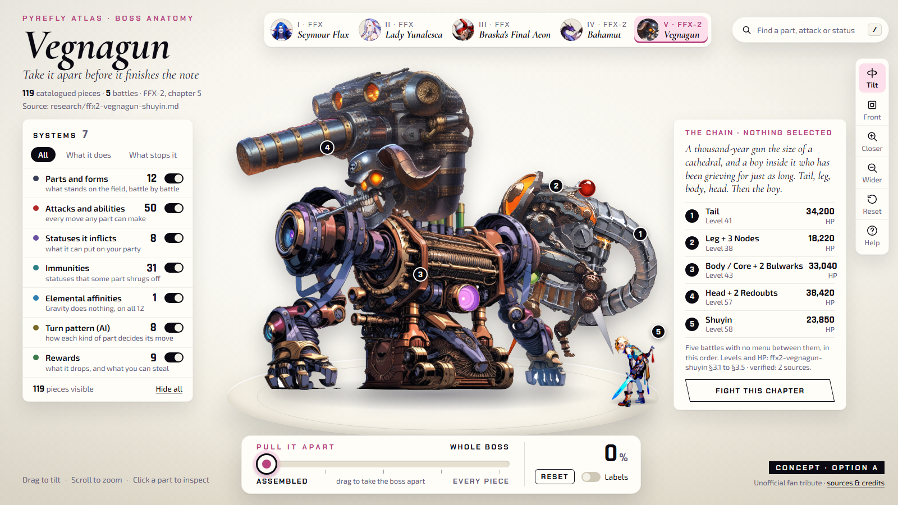
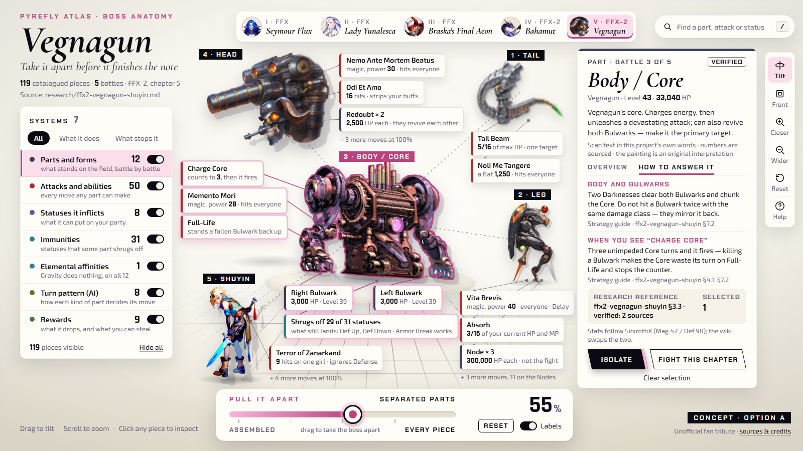
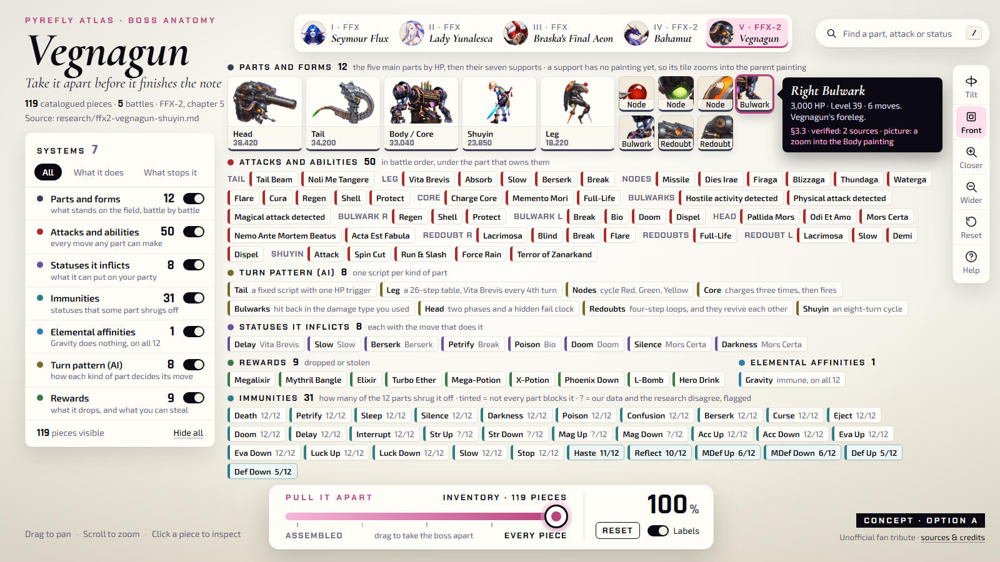
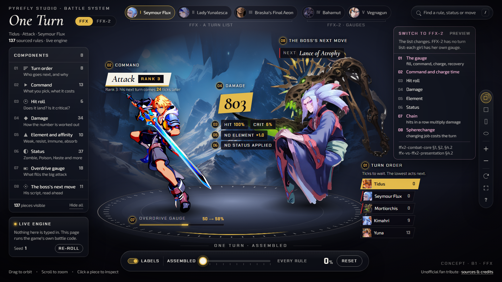
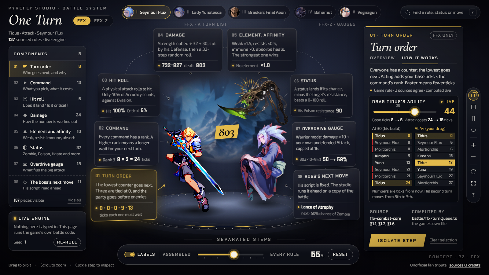
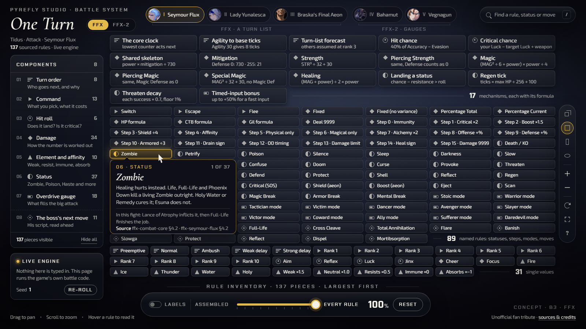
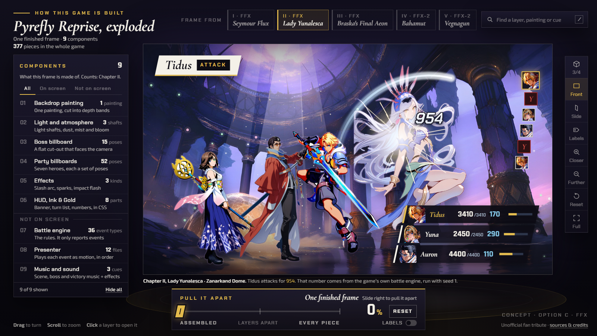
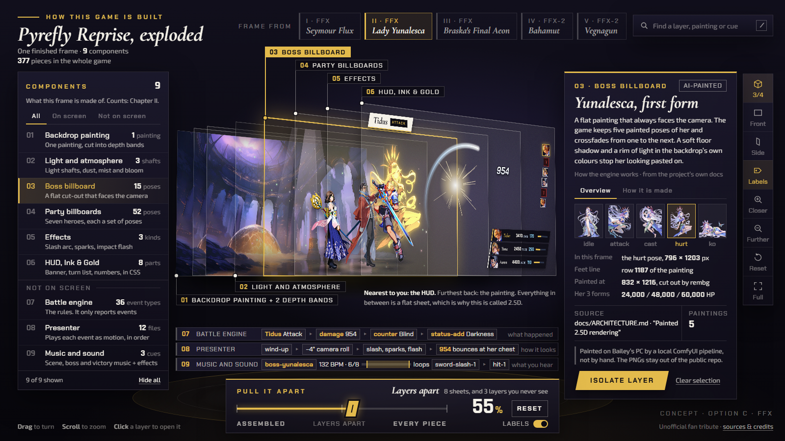
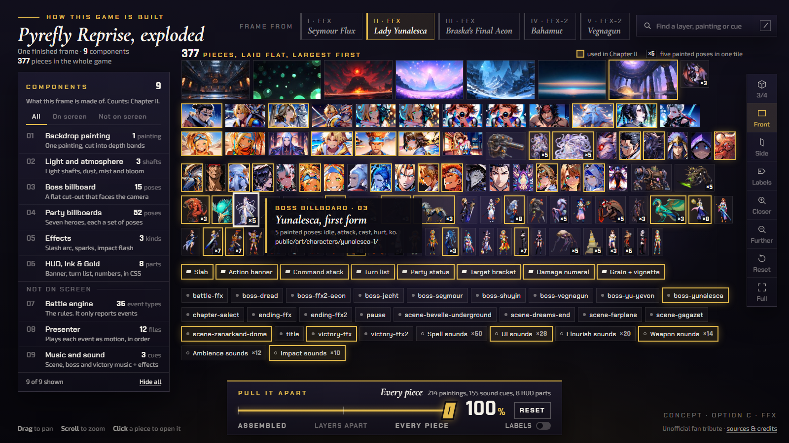

A1The whole boss on the plinth, five battles pinned in order.
Pyrefly Reprise · end-state options for Bailey · pick one, mix them, or say what to change in each
Every option keeps the same nine-part pattern from the two reference sites: one specimen on a stage, a parts panel on the left, the pull-it-apart slider at the bottom, a detail card with its source on the right, isolate, search, a view rail and credits. Only the subject and the look change.








